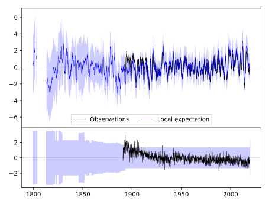
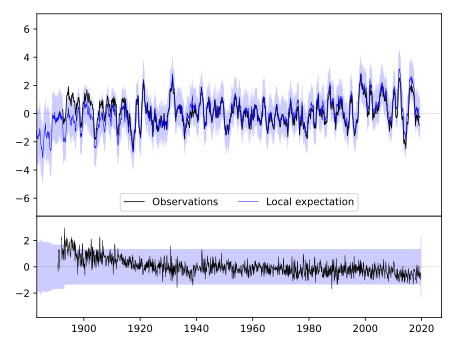
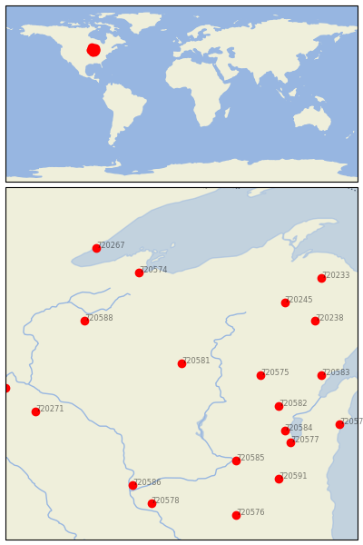

MEDFORD [USA]


| Neighbour | Name | Country | Distance | Lon/Lat | Years |
|---|
| 720581 | MEDFORD | USA | 0 | -90.3, 45.1 | 1890-2019 |
| 720575 | BOWLER | USA | 104 | -89.0, 44.9 | 1893-2019 |
| 720588 | SPOONER AG RES STN | USA | 147 | -91.9, 45.8 | 1893-2019 |
| 720582 | NEW LONDON | USA | 148 | -88.7, 44.4 | 1856-2019 |
| 720245 | STAMBAUGH 2SSE | USA | 172 | -88.6, 46.1 | 1893-2019 |
| 720574 | ASHLAND EXP FARM | USA | 175 | -91.0, 46.6 | 1894-2019 |
| 720584 | OSHKOSH | USA | 181 | -88.6, 44.0 | 1871-2019 |
| 720583 | OCONTO 4 W | USA | 182 | -88.0, 44.9 | 1888-2019 |
| 720238 | IRON MT KINGSFORD WW | USA | 188 | -88.1, 45.8 | 1893-2019 |
| 720585 | PORTAGE | USA | 191 | -89.4, 43.5 | 1890-2019 |
| 720577 | FOND DU LAC | USA | 203 | -88.5, 43.8 | 1871-2019 |
| 720271 | ZUMBROTA | USA | 209 | -92.7, 44.3 | 1891-2019 |
| 720586 | PRAIRIE DU CHIEN | USA | 231 | -91.1, 43.1 | 1822-2019 |
| 720252 | FARMINGTON 3 NW | USA | 232 | -93.2, 44.7 | 1888-2019 |
| 720579 | MANITOWOC | USA | 233 | -87.7, 44.1 | 1851-2019 |
| 720233 | CHAMPION VAN RIPER P | USA | 236 | -88.0, 46.5 | 1893-2019 |
| 720267 | TWO HARBORS | USA | 237 | -91.7, 47.0 | 1893-2019 |
| 720591 | WATERTOWN | USA | 246 | -88.7, 43.2 | 1871-2019 |
| 720578 | LANCASTER 4 WSW | USA | 258 | -90.8, 42.8 | 1872-2019 |
| 720576 | BRODHEAD | USA | 287 | -89.4, 42.6 | 1893-2019 |